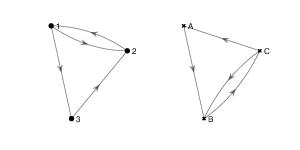
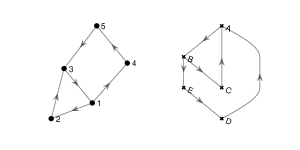
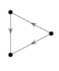
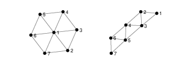
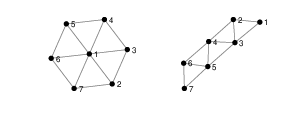

Further Graphs
Contents
Further Graphs#
Isomorphic Graphs#
We say that two graphs are isomorphic if they have the same network structure. Graphs \(G_1\) and \(G_2\) are isomorphic if there exists a matching between their nodes such that two nodes are connected by an edge in \(G_1\) if and only if their corresponding nodes are connected by an edge in \(G_2\).
Definition
An isomorphsim between two graphs \((V_1, E_1)\) and \((V_2, E_2)\) is a bijection (one-to-one correspondence)
such that \((v_1, v_2)\) is in \(E_1\) if and only if \((f(v_1), f(v_2))\) is in \(E_2\).
If an isomorphism exists between two graphs, we say that the graphs are isomorphic.
Example#
Find an isomorphism between the following two graphs.

Solution
These two graphs are isomorphic under the isomorphism \(f\colon \{1, 2, 3\}\to \{A, B, C\}\) where \(f(1) = C, f(2) = B \) and \(f(3) = A\).
Question 1#
1. Find an isomorphism between the following two directed graphs:

2. Find a subgraph of the egg-laying circuit isomorphic to the directed graph below.

3. Use NetworkX functions subgraph and is_isomorphic to confirm your answer to 2.
Example#
How many simple directed graphs are there with 3 nodes and two edges?
Solution
There are 4. Any other simple directed digraph with 3 nodes and 2 edges is isomorphic to one of these.

Question 2#
Draw all simple directed graphs with 3 nodes and 3 edges.
Isomorphism from Adjacency Matrix#
Given two graphs \(G_1\) and \(G_2\), we can check whether they are isomorphic by calculating the adjacency matrix of every permutation of the nodes of \(G_1\). If one of them is equal to the adjacency matrix of \(G_2\), then the two graphs are isomorphic.
There are \(n!\) permutations of \(n\) nodes, so even for relatively small graphs, checking for isomorphism can take a long time. There are \(2.4\times 10^{24}\) possible permutations of a graph with 20 nodes.
Question 3#
Write down all \(3! = 6\) adjacency matrices of the following digraph.

Graph Invariants#
Fortunately, the problem of checking whether two graphs are not isomorphic is often easier. For example, if \(G_1\) has 5 nodes and \(G_2\) has 6 nodes, they certainly are not isomorphic. A graph property which is preserved by isomorphism is called a graph invariant.
Some examples of graph invariants:
Number of nodes
Number of edges
Maximum node degree
Number of triangle (3-cycle) subgraphs
Number of connected components
Question#
1. Show that the following pairs of graphs are not isomorphic by finding an invariant that they do not share.
 

2. Write down two more graph invariants.
Random Graphs#
definition
A random graph is a graph in which the edges are determined in a random way. Given a set of \(n\) nodes and edge probability \(p\), we define a random simple digraph such that for each node pair \(i, j\) \((i\neq j)\) there exists an edge \((i, j)\) with probability \(p\).
This definition of random graph is more properly called an Erdös-Rényi random graph.
We can easily generate random directed graphs using the adjacency matrix graph representation. For a simple digraph, diagonal elements of the matrix are 0, each other element is 1 with probability \(p\) and 0 with probability \(1-p\).
Question 4#
What is the expected number of edges of a random digraph with \(n\) nodes and edge probability \(p\)?
Write a program which, given integer \(n\) and probability \(p\), generates a random simple digraph and determines if it is connected.
Use your script to estimate the probability that a random directed graph with 10 nodes and \(p= 0.1\) is connected.
Null Models#
What do the graph statistics that we have studied — such as degree distribution and average path length — tell us about brain circuits? These statistics scale with the number of edges and nodes in the graph, and so depend on the graph size and connection density as well as other basic properties of the graph.
Given a graph of a neural circuit, a null model is a random graph with identical basic properties such as number of nodes and edges. By comparing global properties of the neural circuit graph with the random graph, it is possible to determine whether the properties of the circuit are large or small in relation to the null model.
Example#
The graph of a region of the Drosophila connectome, PED(R), with connection weight greater than or equal to 10, has \(n=197\) nodes and \(e=516\) edges, resulting in an edge probability of \(p=e/(n^2-n)=0.0134\). We construct a null model consisting of a random graph with \(n=197\) nodes and edge probability \(p=0.0134\).
PED(R) has average path length 2.1 and global clustering coefficient 0.69, compared to 5.3 and 0.02 for the null model.
The normalised average path length and global clustering coefficient are \(2.1/5.3=0.40\) and \(0.69/0.02=34.5\) respectively.